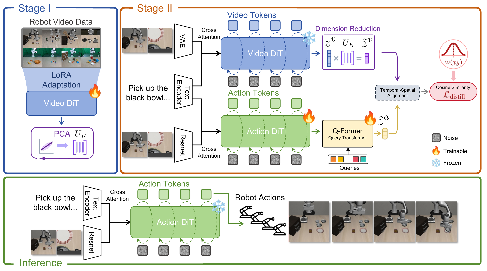
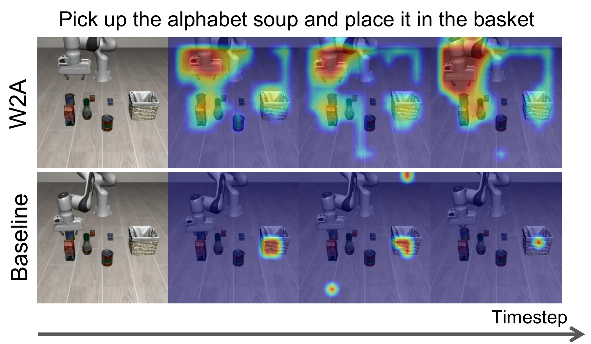
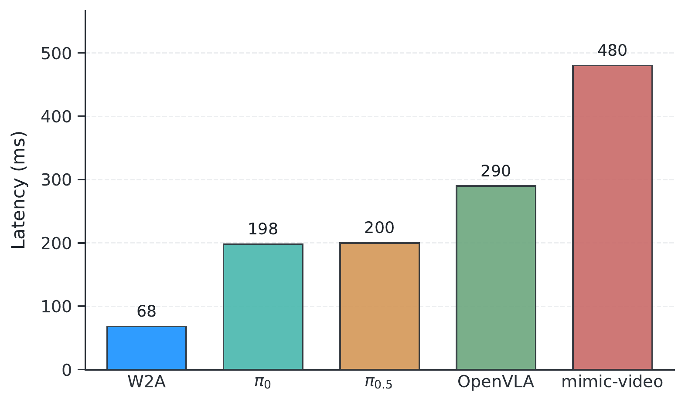

World Action Models (WAMs) have recently shown great promise in robotic control, benefiting from the future imagination capability of large-scale pretrained video models. This enables them to capture the physical causality underlying how actions influence the environment. However, most existing WAMs require explicitly imagining future states at test time, incurring substantial computational overhead and latency that make them unsuitable for real-time robotic control. In this paper, we propose W2A, a two-stage distillation framework for real-time robotic manipulation that distills intermediate denoising representations from a video diffusion model into a diffusion transformer policy during training, while entirely discarding the video model at test time. We hypothesize that although video representations are high-dimensional, a compressed low-dimensional subspace is sufficient to provide effective supervision for action generation. This makes it possible to transfer such information effectively into an action model. Extensive experiments in both simulation and real-world settings demonstrate competitive success rates while significantly improving inference efficiency. On LIBERO, W2A achieves a 95.9% average success rate. More importantly, compared with the representative WAM baseline, W2A achieves about 21X faster inference. These results suggest that distilling video representations into an action model can achieve a favorable trade-off between performance and efficiency.

W2A is a two-stage distillation framework that distills world priors from a video DiT into an action DiT for real-time robotic manipulation. In Stage I, we adapt a pretrained language-conditioned video DiT to robotic video data and compress its latent representations into a lower-dimensional space. In Stage II, we train an action DiT from scratch as our action model and augment its standard action modeling objective with a latent distillation objective, which aligns the action latents with the compressed video latents through a lightweight Q-Former bottleneck. At test time, the video DiT is entirely discarded, and only the action DiT is retained to generate actions conditioned on recent observations and task descriptions.
We evaluate W2A on LIBERO and CALVIN simulation benchmarks, as well as on several real-world tasks.
| Method | Spatial (%) | Object (%) | Goal (%) | Long (%) | Average (%) |
|---|---|---|---|---|---|
| Diffusion Policy (scratch) | 78.3 | 92.5 | 68.3 | 50.5 | 72.4 |
| Octo (finetuned) | 78.9 | 85.7 | 84.6 | 51.1 | 75.1 |
| OpenVLA (finetuned) | 84.7 | 88.4 | 79.2 | 53.7 | 76.5 |
| π0.5 (finetuned) | 98.8 | 98.2 | 98.0 | 92.4 | 96.9 |
| mimic-video (scratch) | 94.2 | 96.8 | 90.6 | – | 93.9 |
| W2A (ours, scratch) | 96.3 | 98.8 | 95.0 | 93.6 | 95.9 |
| Method | Splits | Success Rate (%) | Avg. Len | ||||
|---|---|---|---|---|---|---|---|
| 1/5 | 2/5 | 3/5 | 4/5 | 5/5 | |||
| Diffusion Policy | ABC→D | 40.2 | 12.3 | 2.6 | 0.8 | 0.0 | 0.56 |
| UniPi | ABC→D | 56.0 | 16.0 | 8.0 | 8.0 | 4.0 | 0.92 |
| OpenVLA | ABC→D | 91.3 | 77.8 | 62.0 | 52.1 | 43.5 | 3.27 |
| GR-1 | ABC→D | 85.4 | 71.2 | 59.6 | 49.7 | 40.1 | 3.06 |
| VPP | ABC→D | 96.5 | 90.9 | 86.6 | 82.0 | 76.9 | 4.33 |
| W2A | ABC→D | 95.3 | 91.7 | 85.5 | 80.2 | 77.1 | 4.30 |
| Method | PnP | Cube | Long |
|---|---|---|---|
| Diffusion Policy | 30.0 | 7.5 | 0.0 |
| OpenVLA | 50.0 | 32.5 | 20.0 |
| W2A | 75.0 | 65.0 | 47.5 |
W2A delivers strong results across simulation and real-world robotic manipulation benchmarks. It achieves the best scratch performance on LIBERO, competitive long-horizon performance on CALVIN ABC→D, and consistently outperforms Diffusion Policy and OpenVLA on real-world tasks. These results show that video-based world priors can be effectively distilled into a lightweight action policy without sacrificing performance.

The distilled action latent aligns more consistently with task-relevant regions in the teacher video latent, such as the gripper and manipulated objects. This suggests that action generation mainly relies on features from task-relevant and highly dynamic regions, while background regions are largely ignored during distillation. Notably, the highlighted regions also correspond well to task-relevant areas in the future images, suggesting that the action DiT captures future-aware world priors rather than merely reflecting the current observation. In contrast, the heatmaps read out from the baseline do not exhibit consistent similarity patterns, indicating that W2A truly transfers latent knowledge from the video DiT into the action DiT, rather than merely allowing the Q-Former to fit the video latent.

A key goal of W2A is to retain the benefit of video-based world priors without incurring the overhead of an explicit video model at test time. To verify this, we compare inference latency across representative baselines on the same hardware platform, a compute node equipped with a single NVIDIA A100 40GB GPU. W2A achieves the lowest average inference latency among all compared methods, requiring only 55\,ms per action prediction. In contrast, mimic-video, a WAM that retains explicit future imagination, incurs about 21X higher latency. This efficiency gain comes from discarding the video DiT entirely at inference time and deploying only an action model. Moreover, with a lightweight text encoder, W2A requires only about 6 GB of GPU memory at deployment, which is an advantage in compute-constrained settings.
| Suite | w/o distill. | w/o PCA |
|---|---|---|
| Spatial | 83.6 (-12.7) | 87.0 (-9.3) |
| Object | 87.7 (-11.1) | 92.3 (-6.5) |
| Goal | 85.9 (-9.1) | 90.2 (-4.8) |
| Long | 80.5 (-13.1) | 84.8 (-8.8) |
| Avg. | 85.2 (-11.5) | 88.6 (-7.3) |
we compare W2A with two simplified variants: w/o distillation, which removes the distillation objective and trains the action DiT only with the flow-matching objective, and w/o PCA, which directly uses the original teacher latent without feature compression. Both variants perform worse than the full model. Removing distillation leads to a clear performance drop, confirming that the compact teacher video latents provide useful supervision beyond standard action modeling. Meanwhile, directly distilling the uncompressed teacher latent also degrades performance, suggesting that the raw teacher features are overly high-dimensional and noisy for effective transfer. These results show that both the proposed distillation design and PCA-based compression are important for transferring control-relevant world priors into the policy.
Pick up the banana and place it in the basket
Pick up the blue cup and place it on the plate
Pick up the carrot and place it in the basket
Pick up the white bowl and place it on the plate
Stack the green cube on top of the purple cube
Stack the green cube on top of the red cube
Stack the purple cube on top of the red cube
Stack the red cube on top of the blue cube
Open the top drawer and put the banana in it
Open the top drawer and put the carrot in it
Open the top drawer and put the white bowl in it
Pick up the carrot and banana and place them in the basket